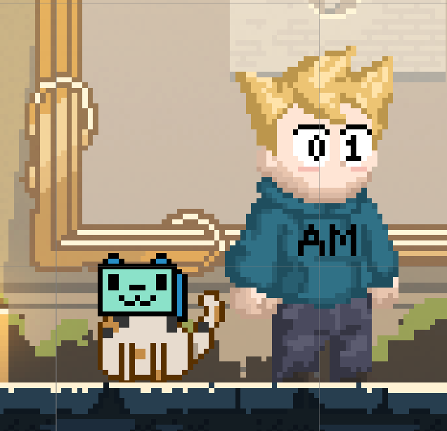
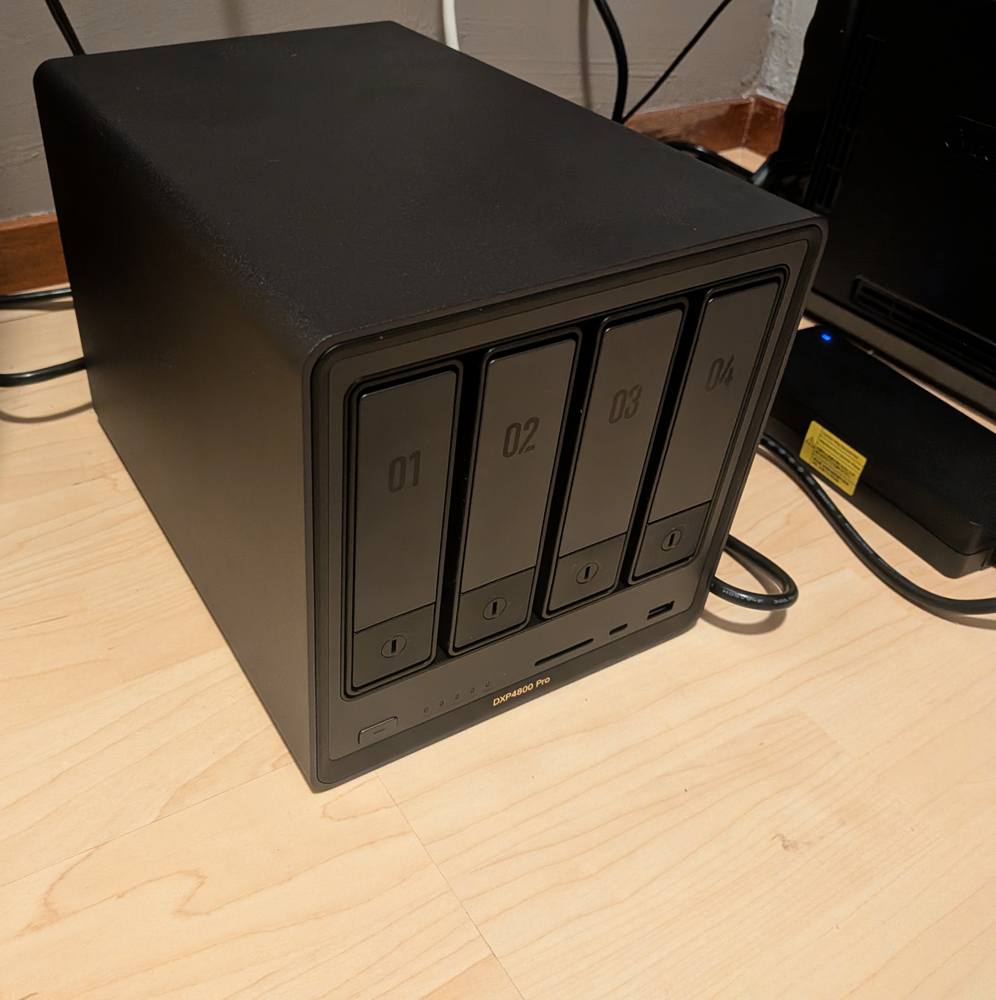

Welcome!
... And I am a student at SintLucas College in Eindhoven. I am 20 years old, studying Game Development, and I have a strong passion for game design. I value professional communication and enjoy working together in a clear and efficient way. My dream is to become a game designer, and I am fully committed to making that dream a reality. Below are only projects of games I have created myself and one larger project I've taken to in my spare time, despite my experience being mostly with game dev however, I'm very eager to learn and take on new challenges!
Things I've built so far.
01
This is the first project I've made I was really proud of. The Space Between Black and White is a short game where the player can choose to swap between a black and white environment at will. The game is meant to mess with the player's expectations through things happening to you seemingly at random, without you ever actually being able to see any of it occurring.
02
Gravity Swap is a game I made as a demonstration of what being able to control gravity in a 2D platformer game could look like. The player is in control of a small cube that can jump twice, cling to walls and turn the direction of gravity.
03
This is another 2D platformer project I worked on with two other people. The player controls a cute little potato guy that's trying to reach his smaller potato buddy. My biggest contribution to this project were the springy controls of the 2nd level, where you can bounce off walls with a force that increases the longer you hold down the jump button.

04
During my internship at Stichting Autimatisering I worked on their "Gamification" project, aimed at reminding children on the spectrum to take care of themselves and teach basic skills through a game. I worked on dialogue, optimising, general help around the game and part of the plans for the game's reward structure.
Due to this still being a project in development, I'm not allowed to show much of the project, so here is a screenshot of the Mascot of the game: Jake and his robotic pet cat!
Video or screenshot
05
After my experience at Stichting Autimatisering I wanted to try delving deeper into Multiplayer on my own. While I never got around to making a game out of this, regardless I'm proud of the code I wrote for this project!
Video or screenshot
06
Made in a group of three, this game was made to accompany a presentation to Heineken about the use of groundwater in the making of their products. I was in charge of the creation of most of the machines in the game and partially the underlying mechanics of game progression. Heineken was very impressed with our work!
Video or screenshot
07
My attempt at a mechanical recreation of Nintendo's WiiPlay Tanks! I tried my best to build the game as efficient as possible from the start, reusing code as much as I could and staying close to the source in how it feels to play. The player has the same kit as they do in the original, with enemy tanks that also move, shoot and bounce shots off walls to hit you!

08
Different kind of project, this is my NAS at home where I run host services like Immich, Syncthing and Gitea on the unRAID operating system. It serves as my own cloud for images, videos, code and more. It was quite the challenge and a lot to learn, but it's been immensely useful!
I've built a handful of smaller things that didn't get their own spot here, and there are a few more in progress. They are all on my GitHub.
See everything on GitHubEmail is the quickest way to reach me.